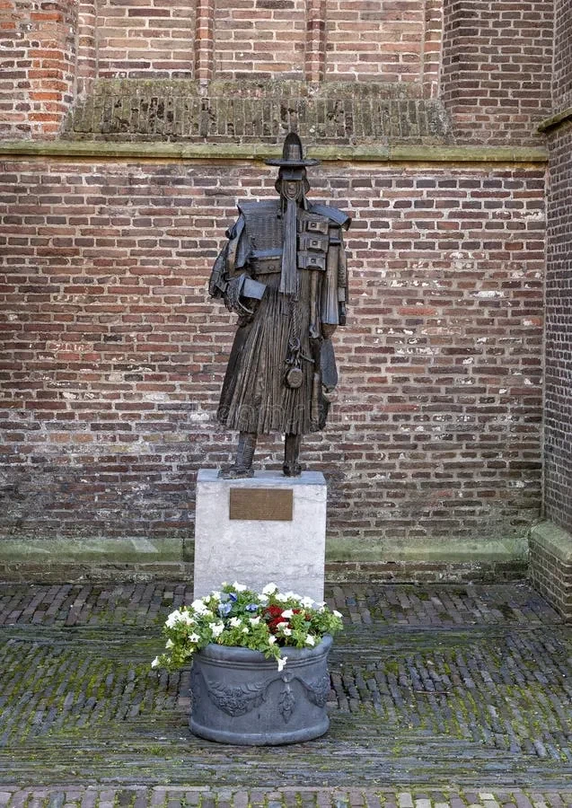
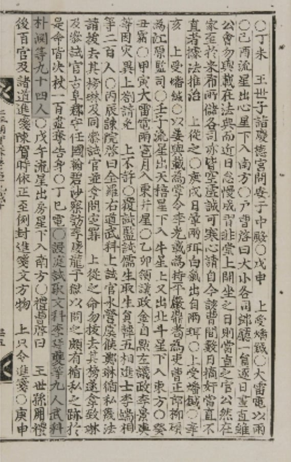
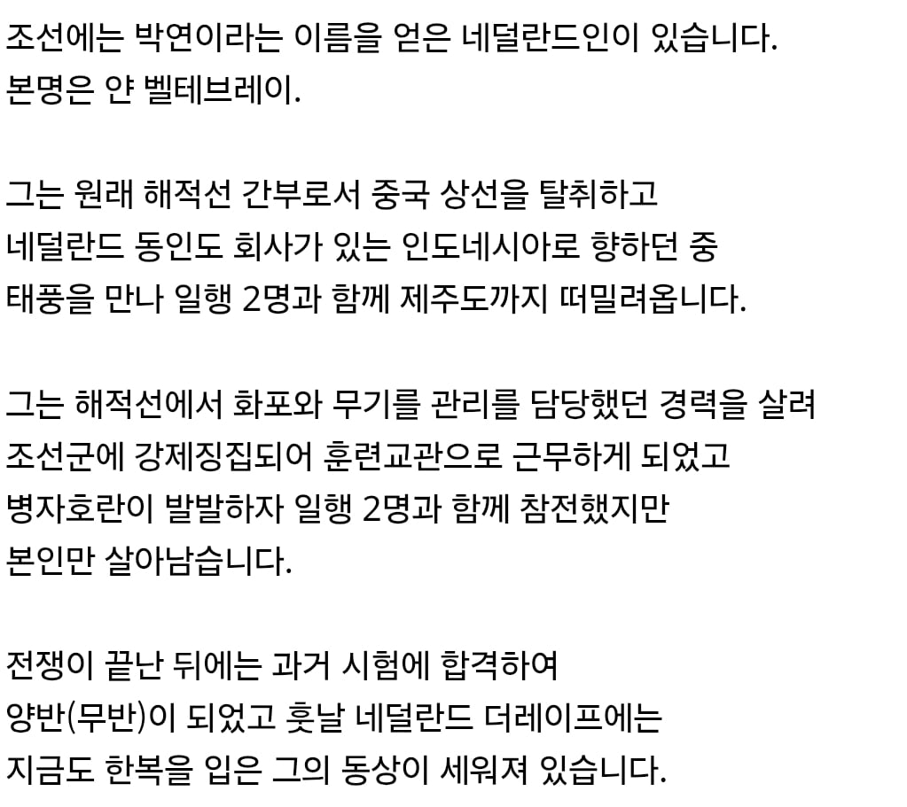

ㅡㅡ

세줄요약
네덜란드에는 한복입은 해적, 박연 동상이 존재함
중국에서 해적질하다 태풍에 휘말려 조선에 표류한 뒤
조선군에 강제징집되어 병자호란까지 참전 후 과거 급제하여 양반됨


ㅡㅡ

세줄요약
네덜란드에는 한복입은 해적, 박연 동상이 존재함
중국에서 해적질하다 태풍에 휘말려 조선에 표류한 뒤
조선군에 강제징집되어 병자호란까지 참전 후 과거 급제하여 양반됨
"이분은 우리 네덜란드 사람이 틀림없습니다."고 대답하자 조선인들은 웃으면서 "틀렸다. 이자는 조선 사람이다."
편견없는 조상님들
백인 보고 처음에 무서워했다가 밥도 먹고 부모님한테 편지쓴다는 이야기 듣고는 아 쟤도 사람이구나! 했다는 썰이 웃겼음ㅋㅋㅋㅋㅋㅋ
효를 아는걸 보니 사람 맞구나!
제대로 된 유교문화의 장점인듯. '생긴 게 금수라도 예를 차릴 줄 알면 사람이다'
호랑이한테 아이구 형님 하니
호랭이도 극진히 노모를 챙기는 효에 미친 나라지
그래서 호랑이랑 까치랑 까마귀도...
나이드니까 박연이지! 해야는데 박위지!
나중에 네덜란드어 다 까먹어서 하멜이 조선에 표류했을때 통역 제대로 못했다고
서로 그냥 씨부리다보니 동기화돼서 끌어안고 엉엉울었다고
얼굴이 뭐여 무섭게
해적이면서 양반이라고
사실 저당시는 해군 상인 해적은 종이한장 차이였지 ㅋㅋㅋ 진짜 종이 한장(사략허가장) 차이였다는거임
하멜 같이 탈출하자해도 조선에 남으신 분..
하멜은 집안이 좋아서 집가고싶어했지만
박연은 잃을게 없어서 눌러앉기가 가능했던거지
네덜란드에서 중국까지 해적질 하러 온 거였어?
멀리 있어서 희귀한거 = 보물
ㄷㄷㄷ 번듯한 상단 직장인으로 알고 있었는데....실망이에요 벨테브레씨
뭐했길래 중국까지 와서 해적질하냐 ㅋㅋ
당시에 상선선원이랑 해적이랑 뒤섞이는게 다반사라 이상하진않음
뱃일 잘하는선원 구하기가 힘들어서 서로 상대 함선 나포하면 거기있던 선원들까지도 긴빠이 해버렸거든
그래서 네덜란드에서 무역때매 왔다가 자진입대 당해버린걸수도 있음
이름이 어떻게 The rape ㄷㄷ... 순수 강간마 해적ㄷㄷ
다시한번 말하지만 사람 인생 어떻게 될지 모르는거야 ㅋㅋㅋㅋㅋㅋㅋㅋ
엥 해적이었어??
해적이라서 본국에 돌아갈 마음이 없었다는 게 정설
그래서 저 동상은 누가 언제 무슨 사연으로 세운건데
무과뽑힐만하네ㅋㅋㅋ
경력직ㅋㅋㅋㄱㅋㅋ
그리고 한참뒤 하멜이라는 양인을 만나게 되는데........
아 루피였어??????미친ㅋㅋㅋㅋㅋ